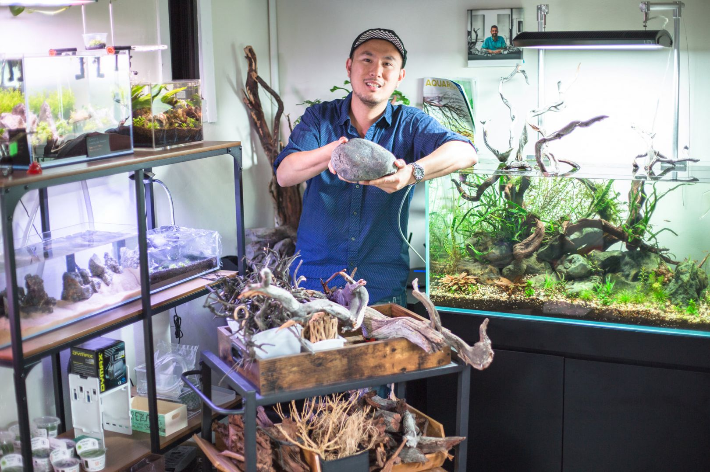

How a house full of animals became a freshwater empire

Roger grew up in a home that doubled as a small zoo — dogs, cats, birds, chickens, a backyard koi pond, and a rotating cast of fish tanks. Of everything that came through the house, it was the aquariums that stuck. There was something about the calm of a glass box full of life that never wore off.
In 2007, that pull turned into a business. Roger, along with his family, took over a local tropical fish shop on University Avenue in San Diego's Mid-City neighborhood. From day one, the store went all-in on freshwater only — no saltwater, no split focus — with the goal of being the local experts on the fish everyone else treated as an afterthought: rare plecos, discus, arowanas, oddballs, shrimp, and aquatic plants.
The timing wasn't easy. The shop opened right before the 2008 recession hit, and spending on fish and supplies dropped along with everything else. Pet Zone got through it by building an online sales channel early — a move that brought in business from well outside San Diego and set the pattern for how the company would keep growing: local roots, national reach.
That reach shows up in the small stuff hobbyists notice. On fishkeeping forums, buyers as far away as Missouri have described arowanas from Pet Zone showing up well-packed and healthy in as little as sixteen hours, water still warm from the trip. It's the kind of detail that's earned the shop a reputation in the community for giving honest advice over an upsell — care that outlasts the sale.
By 2016, the freshwater-only bet had paid off enough to open a second location in the Convoy District, this one leaning into a hobby that was just starting to take off in the U.S. — aquascaping, the art of building natural underwater landscapes out of stone, wood, and plants.
Trips to aquascape galleries across Asia and Europe planted the next idea: San Diego, and really the U.S. as a whole, didn't have a proper gallery dedicated to the craft. So in 2020, Roger co-founded Hakkai — Aquascape Design Gallery, first in Liberty Station's Arts District and, since 2023, folded into the Convoy store. It's believed to be the first aquascape gallery of its kind in Southern California.
These days, Roger splits his time across purchasing, staffing, and customer care at Pet Zone's two stores, business development for Aquascape Supply Co., and a growing portfolio of species-specific websites built to make freshwater fishkeeping easier to learn — a hub-and-spoke approach to becoming the go-to authority on the hobby, locally and online.
Quick facts
- Based
- San Diego, California
- Speaks
- English, Cantonese, Mandarin, Teochew, Vietnamese
- Education
- Chinese University of Hong Kong · San Diego State University
- Before fish
- 10+ years in international import/export & e-commerce
- Recognition
- City of San Diego Small Business of the Week, 2022
- Off the clock
- Cigars, watches, cars, and chasing good food around San Diego